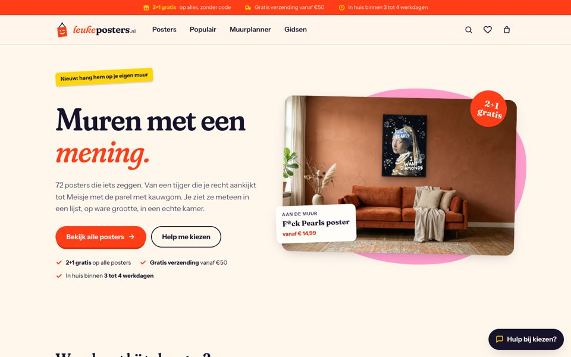
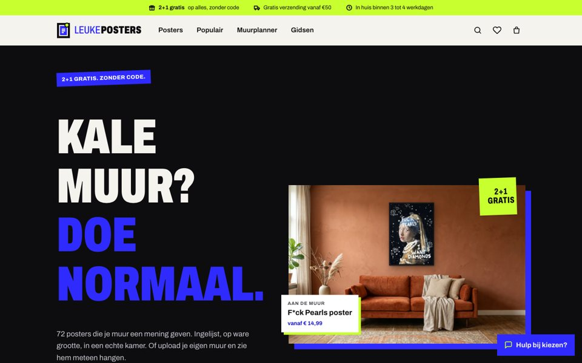
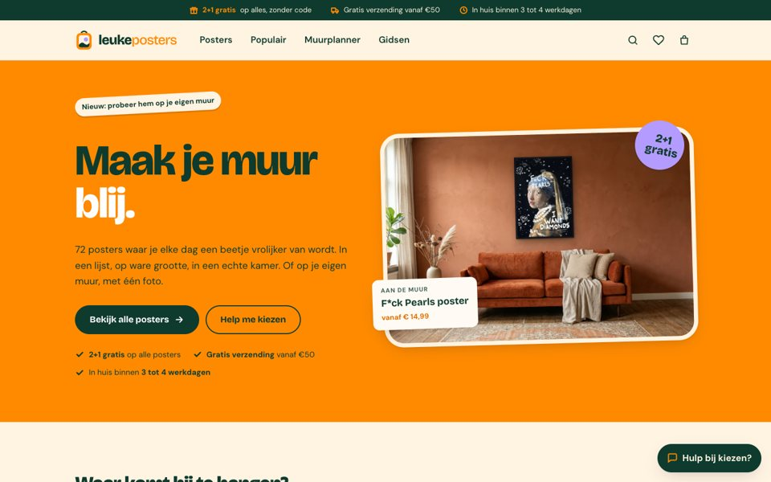
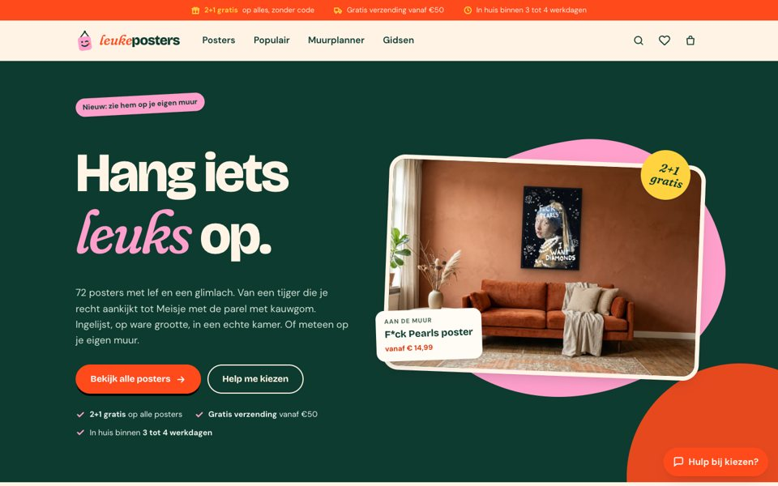

Concept A
Knipoog
“Muren met een mening.”
Brutaal en speels. Klassieke kwaliteit met een knipoog, fel tomaatrood en kauwgomroze.
Bekijk concept A →Zelfde winkel, zelfde posters, 4 verschillende gezichten. Nieuw: concept D combineert het beste van A en C. Klik er doorheen, probeer de muurplanner (je kunt een foto van je eigen muur uploaden) en laat weten welke je kiest.

Concept A
“Muren met een mening.”
Brutaal en speels. Klassieke kwaliteit met een knipoog, fel tomaatrood en kauwgomroze.
Bekijk concept A →
Concept B
“Kale muur? Doe normaal.”
Stoer en grafisch, als een galerie met een grote mond. Zwart-wit met elektrisch blauw en limoen.
Bekijk concept B →
Concept C
“Maak je muur blij.”
Warm, rond en vrolijk. Voor iedereen die van zijn huis een thuis maakt. Diepgroen, mango en lila.
Bekijk concept C →
Concept D · nieuw
“Hang iets leuks op.”
Het lef van Knipoog met de warmte van Blij. Diepgroen met kauwgomroze, een vette letter met een cursieve knipoog, alles net iets ronder.
Bekijk concept D →